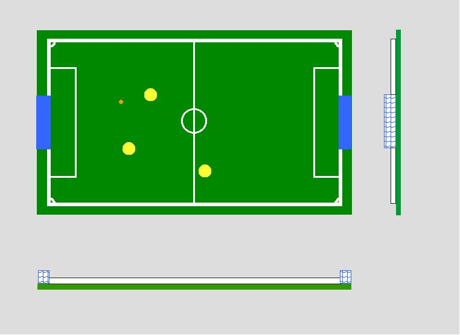

| Size (mm) | Color | Comments | |
|---|---|---|---|
| base | 2940(W) x 1725(L) x ??(H) | Dark Green | width and length is 200mm longer than the field size |
| Field Size | 2740(W) x 1525(L) | Dark Green | |
| Wall | height is 50 | Wthile | |
| Wall Thickness | 10 | ||
| Goal | 500(W) x 100(L) x 100(H) | Blue | frame and net |
| Penalty Area | 1000(W) x 225(L) | field color | |
| place | line width(mm) | color | comments |
|---|---|---|---|
| field border | 20 | white | |
| center line | 10 | white | |
| center circle | diameter 150 | white | |
| penalty area | 10 | white | |
| goal | 500(W) x 100(L) | blue | Goal is built on this area |